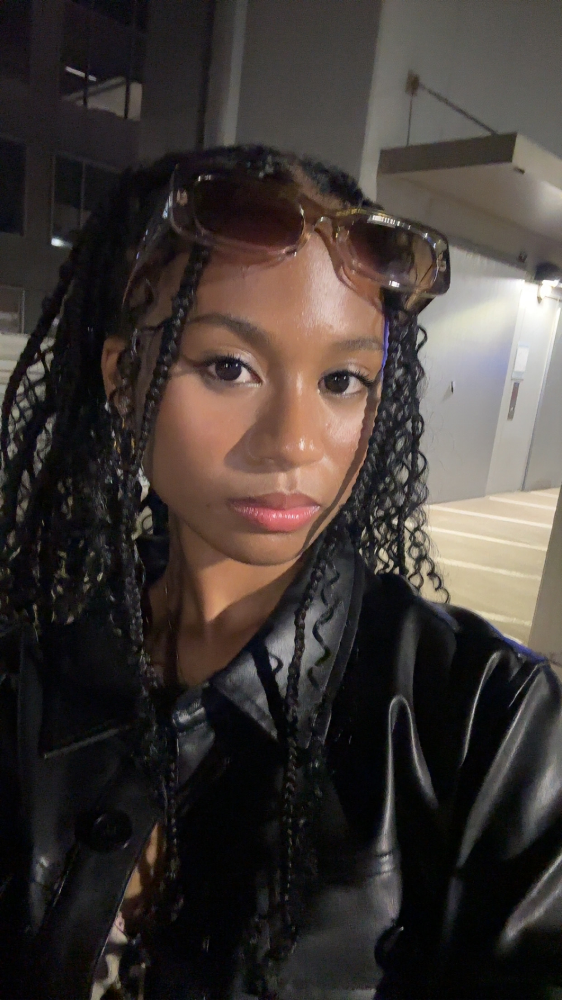

Introduction
Vanita Mae Rabsatt || Vengeful Rabbit

Hi, my name is Vanita and I am a junior majoring in computer science at UNC Charlotte. My concentration is web/app development & software engineering. I’m from Fort Mill, SC, but I was originally born near Detroit, MI.
- Personal Background: In my free time, I enjoy spending time with friends, exploring the city, trying different cuisines, and practicing martial arts.
- Professional Background: My computer science background began in sixth grade, and I started out learning HTML and CSS. Since then, I’ve completed online courses and certificates as well as projects which include languages such as JavaScript, Java, and Python. So far, I have interned at a start-up company called Comet, a college task applications manager, as a student flight test intern from July 2022 to September 2022.
- Academic Background: I am a second-year student at UNC Charlotte, pursuing a major in computer science with a focus on software engineering & web/app development. In my junior and senior year of high school, I took dual enrollment courses at the University of South Carolina at Lancaster.
- Primary Computer: Apple, MacOS, MacBook Air Laptop, Dorm
-
Courses I'm Taking, & Why:
- ITSC 3688 - Comp & Their Impact on Society: This is a required course I have to take for my major.
- MATH 1242 - Calculus II: This is a requirement for computer science majors.
- ITSC 3146 - Intro Oper Syst & Networking: I was informed that this course will be very helpful if I would like to pursue a career in software engineering.
- ITIS 3135 - Front-End Web App Development: I have completed a course similar to this online during the pandemic and I enjoyed it. I also thought it would be a good idea to refresh my memory on JavaScript, HTML, and CSS.
- ITSC 2175 - Logic and Algorithms: This was another course I was told will be very helpful for aspiring software engineers.
- Funny/Interesting Item to Remember Me by: I won a sparring tournament match against a 6’3 guy. I’m 5’1.
“Effort makes you. You will regret someday if you don’t do your best now.”
Jungkook